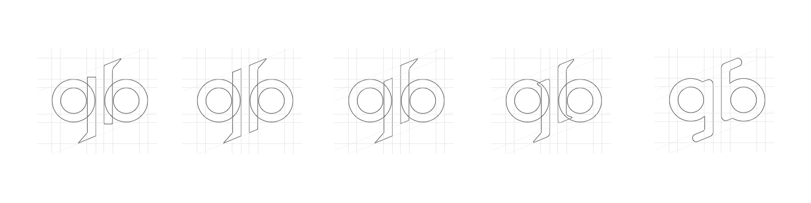

A 41-year-old writing about superheroes has a whiff of desperation to it, I know, as if I were grasping for cultural relevance the way my dad used to reach for the TV remote. But as it turns out, the directors making your superhero movies are older too. Zak Snyder (Watchmen, Batman vs Superman) is 51, Joe Johnston (Captain America) is 66. Chris Nolan (The Dark Knight Trilogy) is 46, David Ayer (Suicide Squad) is 48, and Jon Favreau (Iron Man 1 &2) is 49. Both Shane Black (Iron Man 3) and Joss Whedon (Avengers) are 54.
Nulla auctor nunc urna, at sagittis dolor vehicula et. Nunc a condimentum est. Curabitur pellentesque maximus ligula. Praesent vitae semper mauris. Aenean viverra, neque quis bibendum commodo, nulla leo fringilla nulla, eget consectetur tortor urna quis sem. Nullam hendrerit et nisl ac imperdiet. Fusce vitae consectetur diam. Nunc rhoncus velit purus, vel facilisis risus bibendum non. Nam in varius dui. Phasellus pharetra dignissim nulla, quis tincidunt nisi. Nulla pretium nisl et justo bibendum, et semper dolor ultricies. Integer fringilla ultrices dictum. Phasellus eu maximus nulla, eget sodales purus.
Fusce a felis imperdiet lorem accumsan tristique ac ut magna. Proin facilisis eget augue ut pretium. Nunc eget libero sed quam congue finibus ut at magna. Cras vestibulum sapien nibh, id commodo ipsum vehicula vehicula. Nam ante magna, lobortis non mauris id, mattis finibus neque. Sed a justo ornare, ornare metus vel, ultrices arcu. Suspendisse facilisis, nisl ac condimentum porta, mi arcu mattis enim, vitae condimentum quam arcu at est. Aliquam volutpat turpis at luctus tristique.
Ut neque lectus, feugiat sed odio et, faucibus vehicula ipsum. Interdum et malesuada fames ac ante ipsum primis in faucibus. Pellentesque habitant morbi tristique senectus et netus et malesuada fames ac turpis egestas. Duis consectetur dui eu nisi volutpat scelerisque. Phasellus neque nulla, gravida eu mattis id, malesuada eu justo. Aenean in quam sit amet turpis molestie porta. In vehicula felis vel faucibus feugiat. Integer pellentesque efficitur egestas. Proin ultricies sagittis odio, et maximus tellus lobortis non.
Aenean facilisis dui et elit finibus faucibus. Quisque laoreet elit vitae tempor convallis. Proin sollicitudin consequat mauris, non suscipit orci facilisis ut. Nam molestie imperdiet nisi, ut hendrerit diam malesuada quis. Interdum et malesuada fames ac ante ipsum primis in faucibus. Proin gravida, enim a feugiat ornare, libero mauris lacinia lacus, et volutpat lorem justo a erat. Pellentesque eu tempor metus.